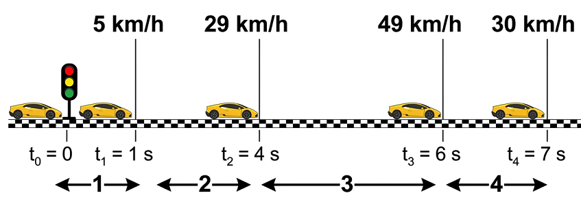
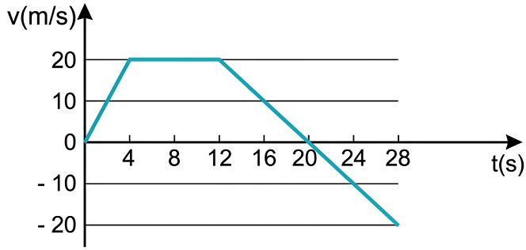

Hình dưới là ảnh chụp hoạt nghiệm thí nghiệm về sự thay đổi vận tốc của một ô tô đồ chơi chạy bằng pin có gắn anten dùng để điều khiển từ xa, trong ba giai đoạn chuyển động.
Vận tốc trong ba giai đoạn chuyển động này có gì giống nhau, khác nhau?
Hình 1 (a,b,c)
- Giai đoạn a: Vận tốc tăng dần.
- Giai đoạn b: Vận tốc không đổi (chuyển động đều).
- Giai đoạn c: Vận tốc giảm dần.
I. CHUYỂN ĐỘNG BIẾN ĐỔI
Một ô tô đang đứng yên, bắt đầu chuyển động sẽ chuyển động nhanh dần (vận tốc tăng dần); khi đang chuyển động muốn dừng lại sẽ phải chuyển động chậm dần (vận tốc giảm dần).
Chuyển động có vận tốc thay đổi được gọi là chuyển động biến đổi.
II. GIA TỐC CỦA CHUYỂN ĐỘNG BIẾN ĐỔI
1. Khái niệm gia tốc
Để xác định được sự thay đổi vận tốc theo thời gian, phải biết vận tốc tức thời của chuyển động tại các thời điểm khác nhau. Các phương tiện giao thông như xe máy, ô tô được trang bị tốc kế là thiết bị đo trực tiếp vận tốc tức thời. Do đó có thể dùng tốc kế trên xe máy hoặc ô tô để tìm hiểu sự thay đổi vận tốc của chuyển động biến đổi.
Bảng 8.1. Bảng ghi số liệu vận tốc tức thời của một chuyển động
Thời điểm \(t\) (s)
0
2
4
6
8
Vận tốc tức thời \(v_t\) (km/h)
0
9
19
30
45
Vận tốc tức thời \(v_t\) (m/s)
0
2,50
5,28
8,33
12,50
Bảng trên cho thấy vận tốc của ô tô tăng dần theo thời gian: Ô tô chuyển động nhanh dần.
❓ Hãy tìm thêm ví dụ về chuyển động biến đổi trong cuộc sống.
- Đoàn tàu chuẩn bị rời ga (nhanh dần).
- Xe buýt đang đi trên đường thì rẽ vào bến (chậm dần).
- Quả táo rơi từ trên cây xuống (nhanh dần).
💡 Em có biết?
Thuật ngữ “gia tốc” có nghĩa là tăng thêm tốc độ. Tuy nhiên trong vật lí, gia tốc không chỉ được dùng để mô tả sự tăng vận tốc mà còn dùng để mô tả sự giảm vận tốc.
Trong các bài sau, chúng ta sẽ thấy gia tốc không những dùng để mô tả sự thay đổi về độ lớn của vận tốc mà còn dùng để mô tả cả sự thay đổi hướng của vận tốc.
Gia tốc xác định bằng công thức \( a = \frac{\Delta v}{\Delta t} \) được gọi là gia tốc trung bình. Nếu \(\Delta t\) rất nhỏ thì có thể coi gia tốc này là gia tốc tức thời.
❓ Dựa vào bảng 8.1:
1. Xác định độ biến thiên vận tốc sau 8 s của chuyển động trên.
2. Xác định độ biến thiên vận tốc sau mỗi giây của chuyển động trên trong 4 s đầu và trong 4 s cuối.
3. Các đại lượng xác định được ở câu 2 cho ta biết điều gì về sự thay đổi vận tốc của chuyển động trên?
1. Độ biến thiên vận tốc sau 8s: \( \Delta v = v_8 - v_0 = 12,50 - 0 = 12,50 \) (m/s). 2.
- Trong 4s đầu (từ 0s đến 4s), độ biến thiên mỗi giây: \( a_1 = \frac{5,28 - 0}{4} = 1,32 \) (m/s²).
- Trong 4s cuối (từ 4s đến 8s), độ biến thiên mỗi giây: \( a_2 = \frac{12,50 - 5,28}{4} = 1,805 \) (m/s²). 3. Các đại lượng trên cho thấy: Vận tốc tăng không đều (4s cuối xe tăng tốc nhanh hơn 4s đầu).
Nếu trong thời gian \(\Delta t\), độ biến thiên vận tốc là \(\Delta v\) thì độ biến thiên của vận tốc trong một đơn vị thời gian là:
Đại lượng \(a\) cho biết sự thay đổi nhanh hay chậm của vận tốc được gọi là gia tốc của chuyển động (gọi tắt là gia tốc).
Nếu \(\Delta v\) có đơn vị là m/s, \(\Delta t\) có đơn vị là giây (s), thì gia tốc có đơn vị là \(m/s^2\).
Vì \(\Delta \vec{v}\) là đại lượng vectơ, nên gia tốc \(\vec{a}\) cũng là đại lượng vectơ:
❓ Hãy chứng tỏ khi \(\vec{a}\) cùng chiều với \(\vec{v}\) (\(a \cdot v > 0\)) thì chuyển động là nhanh dần, khi \(\vec{a}\) ngược chiều với \(\vec{v}\) (\(a \cdot v < 0\)) thì chuyển động là chậm dần.
Chọn chiều dương là chiều chuyển động (nên \(v > 0\)).
- Chuyển động nhanh dần \(\Rightarrow v_t > v_0 \Rightarrow \Delta v > 0\). Do \(\Delta t > 0 \Rightarrow a = \frac{\Delta v}{\Delta t} > 0\). Suy ra \(a \cdot v > 0\) (a cùng dấu v).
- Chuyển động chậm dần \(\Rightarrow v_t < v_0 \Rightarrow \Delta v < 0\). Do \(\Delta t > 0 \Rightarrow a = \frac{\Delta v}{\Delta t} < 0\). Suy ra \(a \cdot v < 0\) (a trái dấu v).
2. Bài tập ví dụ
Đề bài: Một xe máy đang chuyển động thẳng với vận tốc \(10\text{ m/s}\) thì tăng tốc. Biết rằng sau 5 s kể từ khi tăng tốc, xe đạt vận tốc \(12\text{ m/s}\).
a) Tính gia tốc của xe.
b) Nếu sau khi đạt vận tốc \(12\text{ m/s}\), xe chuyển động chậm dần với gia tốc có độ lớn bằng gia tốc trên thì sau bao lâu xe sẽ dừng lại?
Tóm tắt:
a) \(v_0 = 10\text{ m/s}\)
\(v = 12\text{ m/s}\)
\(\Delta t = 5\text{ s}\)
\(a = ?\)
Giải:
a) Gia tốc của xe là:
$$ a = \frac{\Delta v}{\Delta t} = \frac{12 - 10}{5} = 0,4\text{ m/s}^2 $$
b) Thời gian xe đi từ \(12\text{ m/s}\) đến khi dừng lại (\(v'=0\)) với \(a = -0,4\text{ m/s}^2\) (do chậm dần, a ngược dấu v):
$$ \Delta t' = \frac{\Delta v'}{a'} = \frac{0 - 12}{-0,4} = 30\text{ s} $$
Kết luận: Xe dừng lại sau 30 s.
📝 BÀI TẬP HOẠT ĐỘNG VẬN DỤNG
1. a) Tính gia tốc của ô tô trên 4 đoạn đường trong Hình 8.1. b) Gia tốc của ô tô trên đoạn đường 4 có gì đặc biệt so với sự thay đổi vận tốc trên các đoạn đường khác?

Hình 8.1
Đổi đơn vị: \(5\text{ km/h} \approx 1,39\text{ m/s}\); \(29\text{ km/h} \approx 8,06\text{ m/s}\); \(49\text{ km/h} \approx 13,61\text{ m/s}\); \(30\text{ km/h} \approx 8,33\text{ m/s}\)
a) Gia tốc các đoạn: (Áp dụng \(a = \frac{v_2 - v_1}{t_2 - t_1}\))
- Đoạn 1 (\(0 \to 1s\)): \(a_1 = \frac{1,39 - 0}{1 - 0} = 1,39\text{ m/s}^2\)
- Đoạn 2 (\(1 \to 4s\)): \(a_2 = \frac{8,06 - 1,39}{4 - 1} \approx 2,22\text{ m/s}^2\)
- Đoạn 3 (\(4 \to 6s\)): \(a_3 = \frac{13,61 - 8,06}{6 - 4} \approx 2,78\text{ m/s}^2\)
- Đoạn 4 (\(6 \to 7s\)): \(a_4 = \frac{8,33 - 13,61}{7 - 6} \approx -5,28\text{ m/s}^2\)
b) Ở đoạn 4, gia tốc mang dấu âm (\(a < 0\)), chứng tỏ ô tô đang chuyển động chậm dần.
2. Một con báo đang chạy với vận tốc \(30\text{ m/s}\) thì chuyển động chậm dần khi tới gần một con suối. Trong 3 giây, vận tốc của nó giảm còn \(9\text{ m/s}\). Tính gia tốc của con báo.
Áp dụng công thức: \(a = \frac{\Delta v}{\Delta t} = \frac{v - v_0}{\Delta t}\)
\(a = \frac{9 - 30}{3} = -7\text{ m/s}^2\)
Gia tốc của con báo là \(-7\text{ m/s}^2\). Dấu trừ thể hiện chuyển động chậm dần.
3. Đồ thị ở Hình 8.2 mô tả sự thay đổi vận tốc theo thời gian trong chuyển động của một ô tô thể thao. Tính gia tốc của ô tô:
a) Trong 4 s đầu. b) Từ giây thứ 4 đến giây thứ 12. c) Từ giây thứ 12 đến giây thứ 20. d) Từ giây thứ 20 đến giây thứ 28.

Hình 8.2
a) \(0 \to 4\text{s}\): \(v\) tăng từ 0 đến 20m/s \(\Rightarrow a = \frac{20 - 0}{4 - 0} = 5\text{ m/s}^2\)
b) \(4 \to 12\text{s}\): \(v\) không đổi (20m/s) \(\Rightarrow a = \frac{20 - 20}{12 - 4} = 0\text{ m/s}^2\)
c) \(12 \to 20\text{s}\): \(v\) giảm từ 20 về 0 \(\Rightarrow a = \frac{0 - 20}{20 - 12} = -2,5\text{ m/s}^2\)
d) \(20 \to 28\text{s}\): \(v\) đổi chiều, từ 0 đến -20 \(\Rightarrow a = \frac{-20 - 0}{28 - 20} = -2,5\text{ m/s}^2\)
📌 EM ĐÃ HỌC
Gia tốc là đại lượng cho biết sự thay đổi nhanh chậm của sự thay đổi vận tốc: \(\vec{a} = \frac{\Delta\vec{v}}{\Delta t}\)
Khi \(\vec{a}\) cùng chiều với \(\vec{v}\) (\(a \cdot v > 0\)): chuyển động nhanh dần.
Khi \(\vec{a}\) ngược chiều với \(\vec{v}\) (\(a \cdot v < 0\)): chuyển động chậm dần.
Đơn vị của gia tốc trong hệ SI là \(m/s^2\) (\(m \cdot s^{-2}\)).
🚀 EM CÓ THỂ
Dùng khái niệm gia tốc để giải thích một số hiện tượng về chuyển động dưới tác dụng của lực. Ví dụ như chuyển động rơi của một vật là chuyển động có gia tốc vì vật rơi chịu tác dụng của lực hút của Trái Đất.
PHẦN LUYỆN TẬP CỦNG CỐ
A. Trắc nghiệm (Tự chấm điểm)
B. Bài tập vận dụng
Bài 1: Một đoàn tàu đang chạy với vận tốc \(72\text{ km/h}\) thì hãm phanh. Sau 10 giây tàu dừng lại hẳn. Tính gia tốc của tàu.
Giải:
Đổi: \(v_0 = 72\text{ km/h} = 20\text{ m/s}\)
Khi dừng lại hẳn thì \(v = 0\text{ m/s}\). Thời gian \(\Delta t = 10\text{ s}\).
Áp dụng công thức tính gia tốc:
$$ a = \frac{v - v_0}{\Delta t} = \frac{0 - 20}{10} = -2\text{ m/s}^2 $$
Gia tốc là \(-2\text{ m/s}^2\) (chuyển động chậm dần).
Bài 2: Một người đạp xe bắt đầu khởi hành, chuyển động nhanh dần với gia tốc \(2\text{ m/s}^2\). Hỏi sau bao lâu người đó đạt vận tốc \(6\text{ m/s}\)?
Giải:
Bắt đầu khởi hành nên vận tốc đầu \(v_0 = 0\). Vận tốc lúc sau \(v = 6\text{ m/s}\). Gia tốc \(a = 2\text{ m/s}^2\).
Từ công thức \(a = \frac{v - v_0}{\Delta t}\) suy ra thời gian:
$$ \Delta t = \frac{v - v_0}{a} = \frac{6 - 0}{2} = 3\text{ s} $$
Vậy sau 3 giây xe đạt được vận tốc đó.
Bài 3: Một máy bay chạy đà trên đường băng, bắt đầu từ trạng thái nghỉ với gia tốc \(3\text{ m/s}^2\) trong 15 giây trước khi cất cánh. Tính vận tốc của máy bay ngay lúc cất cánh.
Giải:
Vận tốc ban đầu \(v_0 = 0\). Gia tốc \(a = 3\text{ m/s}^2\). Thời gian \(\Delta t = 15\text{ s}\).
Ta có: \( a = \frac{v - v_0}{\Delta t} \Rightarrow v = v_0 + a \cdot \Delta t \)
$$ v = 0 + 3 \cdot 15 = 45\text{ m/s} $$
(Có thể đổi sang km/h: \(45 \cdot 3,6 = 162\text{ km/h}\)).